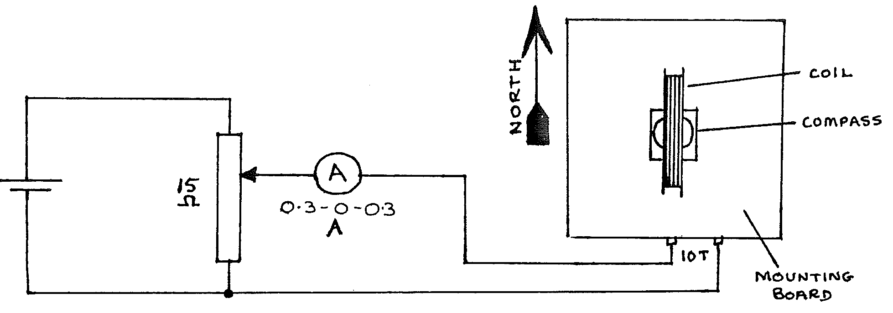
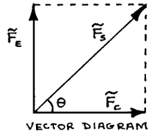

F5-2: Measurement of the Horizontal Component of Earth’s Magnetic Field¶
Apparatus¶
1.5V Cell; 15\(\Omega\) rheostat (approximate); galvanometer with shunt for O.3-O-O.3 A; mounted coil; magnetic compass; 5 wires (3 long, 2 short); 0.5m ruler.

Procedure¶
- Set up the apparatus as above, but do not connect the battery. To avoid errors due to extra magnetic fields, the wires from the coil to the ammeter & rheostat should be long and twisted together. Arrange the compass accurately at the centre of the coil.
- Turn the plane of the coil so that it lies accurately North-South (magnetic).
- Connect the battery and adjust the rheostat until the compass needle points NW or NE (at exactly 45° to North). Read the ammeter.
- Reverse the battery, and repeat step 3. Average the two readings of current.
- Measure the coil across several diameters. Average these readings and thus find the average radius of the coil.
Theory¶
There are two forces acting on the compass needle:
The compass needle points along the direction of the vector sum of these two forces.
When \(\tilde{F_C} = 0\), the needle points North, along \(\tilde{F_E}\);
When \(\tilde{F_C} \neq 0\), then the needle points along the sum \(\tilde{F_S}\), as shown on the vector diagram:

From the diagram, when \(\theta = 45\)°, \(\tilde{F_E} = \tilde{F_C}\). In this case, the magnetic fields of the coil current and the Earth are equal. The field produced by the coil current can be calculated from:
Where:
In the experiment the magnitude of the field produces by the coil has the same value as the horizontal component of the Earth’s magnetic field.
Analysis¶
- Calculate the horizontal component of the Earth’s magnetic field.
- Draw a diagram of the Earth showing the magnetic lines of force.
- Use the diagram to explain why the experiment measures the horizontal component of the field. (Hint: consider the difference if the experiment is done first in Tanzania, then in Iceland).
- If in the experiment, the electric current is doubled, calculate the angle (from magnetic North) along which the compass needle points.